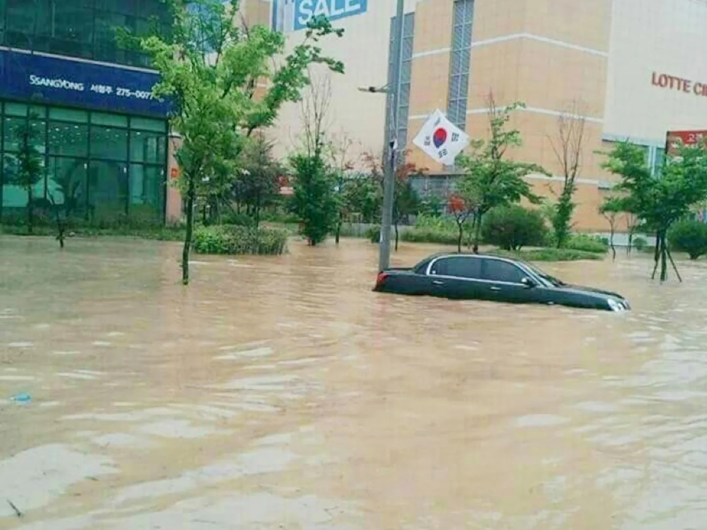
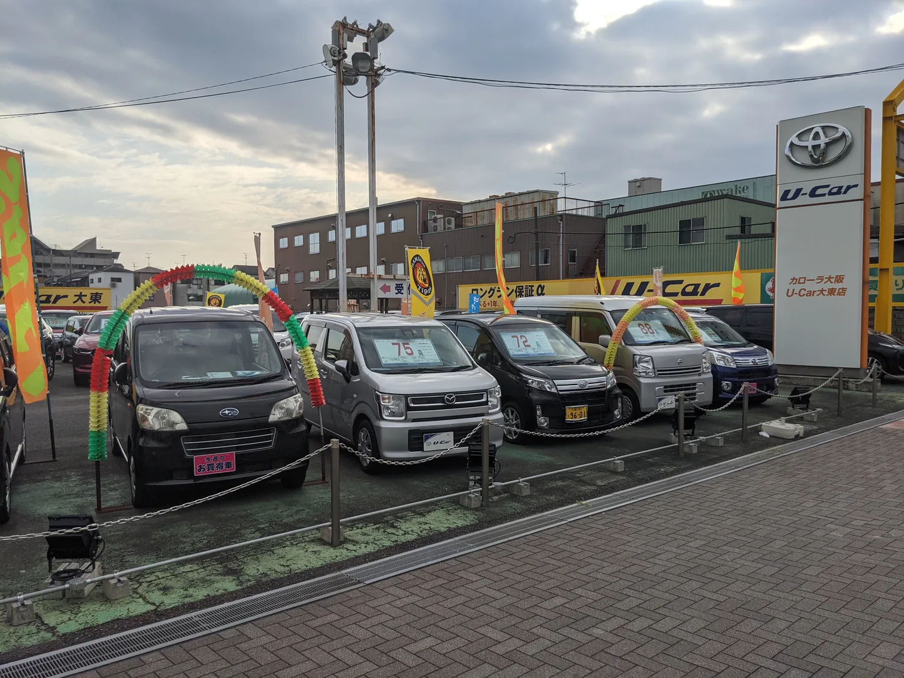
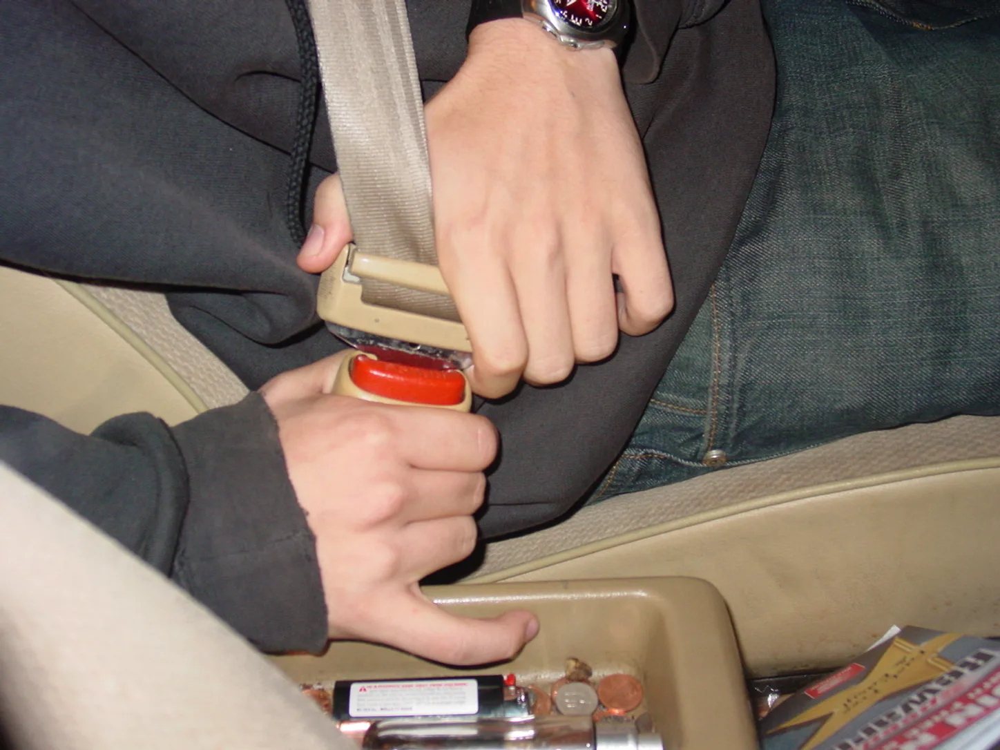
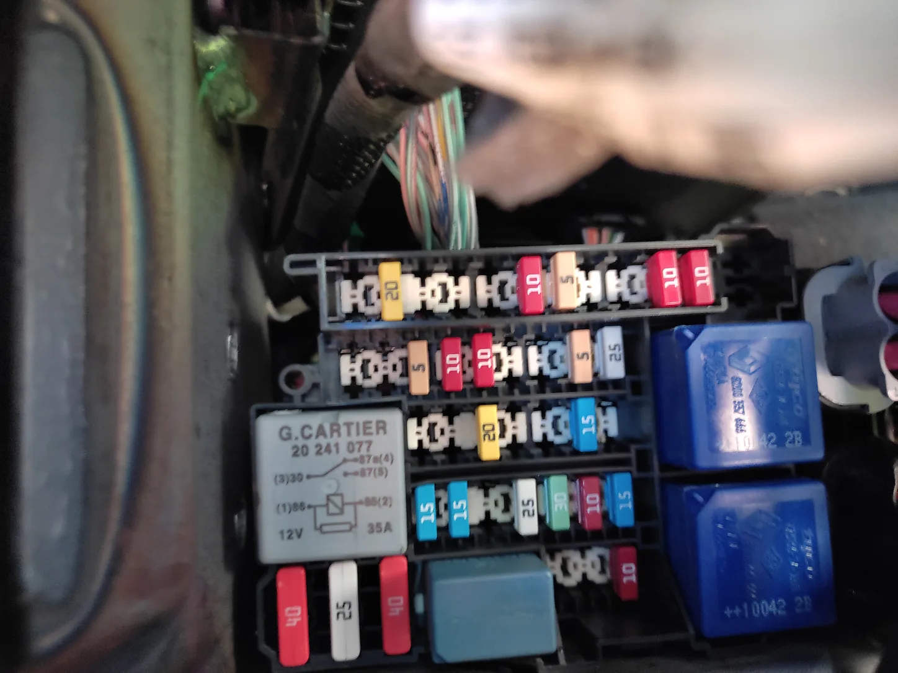

▲ 태풍·집중호우 때 이렇게 흙탕물에 잠겼던 차량 상당수가 결국 중고차 시장으로 흘러든다 ⓒ Wikimedia Commons (Tmt1103)
태풍과 집중호우가 한 번 훑고 지나가면, 몇 주 안에 중고차 매물 목록에 '무사고 급매'가 늘어난다. 침수 피해 차량 중 일부가 제대로 수리·고지되지 않은 채 시세보다 싼 값에 시장으로 흘러들기 때문이다.
보험 처리된 차량은 그나마 이력 조회로 걸러지지만, 자차보험이 없거나 보험사에 신고하지 않은 채 개인 간 거래로 넘어간 차량은 서류상 흔적이 남지 않는다. 결국 마지막 방어선은 구매자의 눈과 손이다.
1. 왜 이맘때 침수차가 쏟아지나
침수차 자체는 불법이 아니다. 문제는 침수 사실을 숨기고 파는 것이다. 전손 처리된 차량이라도 부품을 교체하고 세척해 겉으로는 멀쩡해 보이게 만든 뒤, 정상 매물처럼 유통되는 사례가 매년 태풍철 이후 반복된다.
📍 보험 처리가 안 된 차량이 더 위험하다
자차보험에 가입돼 전손·분손 처리된 차량은 보험사 기록이 남아 이력 조회로 걸러질 확률이 높다. 반대로 책임보험만 있거나 자차보험 미가입 상태로 침수된 차량, 지자체 피해 신고가 누락된 차량은 서류상 흔적 없이 개인 간 직거래·일부 매매상을 통해 유통될 위험이 크다. 이런 경우일수록 육안 확인이 사실상 유일한 방어선이 된다.

▲ 중고차 매매단지에 진열된 차량들 — 침수 이력이 제대로 고지되지 않은 매물이 섞여 유통될 위험이 있다 ⓒ Wikimedia Commons
2. 육안 체크리스트 — 안전벨트부터 퓨즈박스까지
가장 많이 알려진 방법이 여전히 가장 효과적이다. 침수차는 물이 빠진 뒤에도 눈에 잘 띄지 않는 틈새에 흙과 물때, 부식 흔적을 남긴다.

▲ 안전벨트를 끝까지 당겨 안쪽에 진흙·물때·부식이 없는지 확인하는 것이 침수차 감별의 기본이다 ⓒ Wikimedia Commons (Jusmar)
| 확인 부위 | 체크 포인트 |
|---|---|
| 안전벨트 | 끝까지 당겨 안쪽에 진흙·물때·곰팡이 흔적이 있는지 확인. 제조일자 라벨이 차량 연식과 맞지 않으면 벨트만 교체했을 가능성 |
| 안전벨트 되감기 | 벨트를 놓았을 때 스스로 매끄럽게 감기지 않고 손으로 밀어 넣어야 한다면 리트랙터(되감기 장치) 내부에 습기·이물질이 들어갔을 가능성 |
| 시트 레일 · 시트 하단 | 연식에 비해 부식·녹이 과도한지, 시트를 앞뒤로 밀 때 걸리는 느낌이 있는지 확인 |
| 실내 매트 아래 바닥재 | 매트를 들췄을 때 물자국·곰팡이 냄새·눅눅함이 남아있는지, 카펫과 바닥 패널 색이 부위별로 다른지 |
| 퓨즈박스 · OBD 단자 · 시가잭 | 눈에 잘 띄지 않는 구석까지 흙먼지·부식·물이 마른 얼룩이 있는지 확인 |
| 트렁크 스페어타이어 홈 | 움푹 파인 구조라 물이 고이기 쉬운 부위. 흙 앙금이나 녹이 남아 있는지 확인 |
| 실내 냄새 · 에어컨 필터 | 방향제로도 가려지지 않는 퀴퀴한 곰팡이 냄새, 에어컨을 켰을 때 나는 이상한 냄새 |

▲ 퓨즈박스처럼 잘 보이지 않는 구석일수록 녹이나 물때가 남아있을 확률이 높다 ⓒ Wikimedia Commons (Juandev)
✅ 시승·점검 시 함께 확인할 것
· 계기판 경고등이 이유 없이 여러 개 동시에 들어오는지
· 전동 시트·창문·사이드미러 같은 전동 장치 작동이 매끄러운지
· 안전벨트 경고등이 꺼진 뒤에도 벨트 자체의 잠금·되감기가 정상인지
· 볼트·나사 머리에 공구로 만진 흔적 없이 과도한 녹이 슬어 있는지(부품 분해·재조립 흔적)
3. 서류로 한 번 더 — 카히스토리 · 자동차365 무료 조회
육안 확인과 별개로, 계약 전 반드시 온라인 이력 조회를 병행해야 한다. 2026년 기준 무료로 침수 이력을 확인할 수 있는 공적 경로는 두 곳이다.
| 서비스 | 운영 주체 | 특징 |
|---|---|---|
| 카히스토리 | 보험개발원 | 1996년 이후 보험사고 이력 수집. '무료침수차량조회' 메뉴에서 차량번호로 보험 처리된 침수 이력을 무료로 확인 가능. 사고이력조회(유료)와는 별도 메뉴 |
| 자동차365 | 한국교통안전공단(TS) · 국토교통부 | 차량번호만 입력하면 정비이력·점검이력·보험 전손분손 정보·지자체 피해 신고 정보 등 5개 항목을 통합 확인. 매매업자 소유의 신고된 매매용 차량이 조회 대상이며, 과거 침수 이력도 함께 표시 |
차량번호나 차대번호만 있으면 몇 분 안에 확인할 수 있으니, 계약서에 도장을 찍기 전 두 곳 모두 조회해보는 것이 좋다. 카히스토리 바로가기 자동차365 침수정보 조회 바로가기
📍 두 서비스를 같이 봐야 하는 이유
카히스토리는 보험 처리된 사고·침수 기록에 강하고, 자동차365는 정비·점검·지자체 신고 같은 행정 이력까지 폭넓게 확인할 수 있다. 다만 두 서비스 모두 애초에 어딘가에 신고·접수된 기록이 있어야 조회에 뜬다는 한계가 있다. 보험 미가입 상태로 침수됐고 지자체에도 신고되지 않은 차량은 서류상으로는 '이상 없음'으로 나올 수 있다 — 그래서 육안 확인이 여전히 필요하다.
4. 침수차 고지의무 위반, 처벌이 이만큼 세졌다 (2026년 기준)
국토교통부는 이미 2022년 「침수차 불법유통 방지 방안」을 통해 처벌을 크게 강화했고, 2026년 현재 국회에서는 이를 한층 더 조이는 개정안이 심사 중이다.
| 위반 주체 · 행위 | 처벌 |
|---|---|
| 매매업자 — 침수 사실을 숨기고 판매 | 즉시 사업등록 취소(원스트라이크아웃), 매매 종사원은 3년간 매매업 종사 제한 |
| 전손 처리 차량 — 폐차 의무 불이행 | 지연 기간에 따라 과태료 최대 1,000만원(자료에 따라 최대 2,000만원까지 언급, 지자체·시행 시점별 상이) |
| 정비업자 — 침수차 정비 사실 은폐 | 사업정지 6개월 또는 과징금 1,000만원, 해당 정비사 직무 정지 |
| 성능상태점검자 — 침수 사실 미기재 | 사업정지 6개월 + 2년 이하 징역형 |
| 매매업자 — 침수 이력 은폐 처벌 전력자를 고용 | 과태료 100만원 (2026년 개정 논의 사항) |
📍 2026년, 처벌은 더 강해지는 방향
2026년 9월 현재 국회 국토교통위원회에서는 고의로 침수 이력을 누락한 경우 단 한 차례 적발만으로도 즉시 등록이 취소되도록 하고, 이런 전력이 있는 사람을 고용한 매매업자에게도 별도 과태료를 물리는 자동차관리법 개정안이 심사 중이다. 아직 국회를 통과하지 않은 계류 법안이므로 시행 여부와 시점은 향후 국회 처리 경과를 지켜봐야 한다.
5. 이미 샀는데 침수차가 의심된다면
계약 이후에 의심 정황을 발견했다면 시간이 생명이다. 다음 순서로 대응하는 것이 일반적이다.
⚠️ 침수차 의심 매물, 이렇게 대응한다
· 즉시 공식 정비 네트워크나 검사소에서 침수 여부 정밀 점검을 받고 소견서를 확보한다
· 매매계약서·성능상태점검기록부에 침수 사실이 기재되지 않았다면, 이는 고지의무 위반의 증거가 된다
· 매매업자를 통한 거래라면 한국교통안전공단(TS)·소비자원에 신고하고 계약 취소·환불을 요구할 수 있다
· 개인 간 직거래였다면 민사상 하자담보책임(계약 해제·손해배상 청구)을 검토한다
침수 사실을 알고도 숨긴 판매자를 상대로 한 분쟁에서는, 구매 전 확보해 둔 카히스토리·자동차365 조회 결과와 성능점검기록부가 중요한 증거 자료가 된다. 계약 전 조회 결과를 캡처해 두는 습관이 실제 분쟁에서 큰 차이를 만든다.
6. 요약
침수차 감별의 시작은 안전벨트다. 끝까지 당겨 진흙·물때·곰팡이 흔적을 확인하고, 손을 놓았을 때 매끄럽게 되감기는지 함께 살핀다. 시트 레일, 실내 매트 아래, 퓨즈박스, 트렁크 스페어타이어 홈처럼 물이 고이기 쉬운 구석까지 확인하면 정황을 더 확실히 잡을 수 있다.
서류 확인도 병행해야 한다. 보험개발원 카히스토리와 한국교통안전공단 자동차365에서 차량번호만으로 무료 침수 이력을 조회할 수 있다. 다만 보험 미가입·미신고 침수차는 서류에 안 잡힐 수 있어, 육안 확인을 대체하지는 못한다.
침수 사실을 숨기고 판매하면 처벌은 결코 가볍지 않다. 매매업자는 적발 즉시 사업등록이 취소되고, 2026년 현재 국회에서는 처벌을 한층 강화하는 자동차관리법 개정안이 심사 중이다. 계약 전 몇 분만 들여 확인하면 막을 수 있는 피해인 만큼, 태풍·집중호우 직후 중고차를 알아본다면 이 체크리스트를 그대로 따라 해보는 것을 권한다.